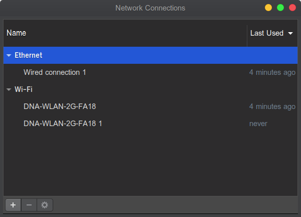
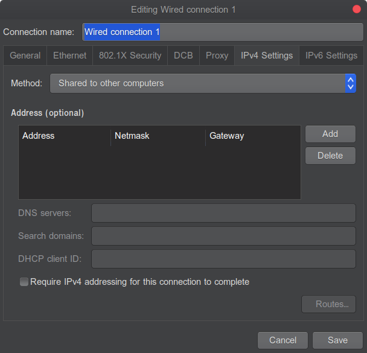
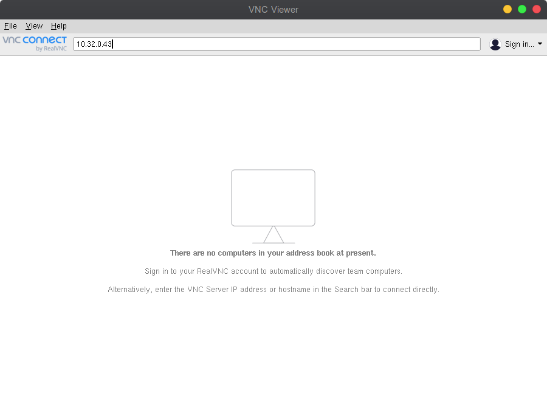
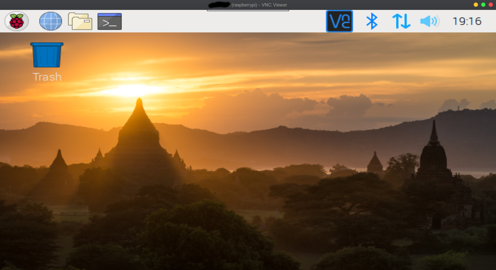

Notes
Some things about Software Development
Raspberrypi Headless Installation
Setting up Raspberry Pi (Connecting direct from laptop via Ethernet) - Headless Installation
Flashing Raspberry Pi
- First you need a micro sd card of minimum 8Gb space,with FAT format.
- Then you need a software to flash to the sd. In our case its https://www.balena.io/etcher/. Download the current platform image.
- Now lets download the latest image of raspian from here https://www.raspberrypi.org/downloads/raspbian/. I am using Raspbian Buster with desktop and recommended software.
- Unzip etcher and launch the app.
- Select the downloaded raspian zip file. Etcher shold select correct sd card, if not then select that. Then click Flash. You should see the following screen

In my case I would like to have ssh to be enabled, so to do that you can create a ssh file in the sd card’s boot partition. the file content does not matter just the file name ssh is enough. https://www.raspberrypi.org/documentation/remote-access/ssh/
Unmount the sd card and pop it in the raspberrypi.
Connecting to Raspberry Pi
- Now, these steps are important if you would like to avoid the hassle of having another monitor, keyboard, mouse to connect to the raspberrypi.
- Instead we will connect it just from the PC or laptop in my case, just by using the ethernet cable. > Note: I am using Ubuntu and I will explain how to do it on ubuntu.
First install the following tools net-tools and nmap.
sudo apt-get install net-toolssudo apt-get install nmapNow edit your enthernet to be shared with other computers.
nm-connection-editor

- select the ethernet connection and click on the settings button at the bottom of the window.
- select the IPv4 tab and set Method to be “Shared to other computers”

- Press Save and reboot
- Now connect your raspberrypi with an ethernet cable and other end connect it directly to your laptop.
run the following command to know your ethernet cnonnection name.
ifconfigIt will list you all connections configured. And find the ethernet connection name, in my* case its eno1
In the information of that ethernet search for the text Broadcast and the following ip text.
You can also use the following command
ifconfig eno1 | grep "broadcast" | awk -F: '{print $1}' | awk '{print $6}'In my case it was 10.32.0.255
Now, lets find the ip of the raspberrypi to connect to (remember that its connected to your laptop via ethernet)
Run the following command
nmap -n -sP 10.32.0.255/24It should return something like this
Starting Nmap 7.60 ( https://nmap.org ) at 2019-07-26 15:43 EEST Nmap scan report for 10.32.0.1 Host is up (0.00031s latency). Nmap scan report for 10.32.0.43 Host is up (0.0014s latency). Nmap done: 256 IP addresses (2 hosts up) scanned in 2.81 seconds
The last ip is your raspberrypi ip.
Lets use ssh to connect to it.
ssh -Y pi@10.32.0.43What we are doing is that we are trying to login with user pi
Now it wil ask for password. Give raspberry. That is the default password.
If everything is fine you shoudl see this
pi@raspberrypi:~ $
Now lets enable the possibily to see the raspian os ui from our laptop
First lets enable VNC server
You can read more here : https://www.realvnc.com/en/connect/docs/raspberry-pi.html#raspberry-pi-setup
Run the following command
sudo apt-get updatesudo apt-get install realvnc-vnc-serverNow lets make the service to be started at bootup
sudo systemctl enable vncserver-x11-serviced.serviceChoose option 1 and give password raspberry
Now lets start the service
sudo systemctl start vncserver-x11-serviced.serviceChoose option 1 and give password raspberry
Now in our laptop we have to install VNC viewer from here https://www.realvnc.com/en/connect/download/viewer/linux/ . Remeber to select DEB x64 if you are on ubuntu like me. Then click on download.
Install it. And launch it.

- Put the IP of the raspberrypi and press enter.
- It will ask for username and password.
- Username: pi and password: raspberry
- If everything is fine you should see the raspberrypi ui.

- Also, remeber to set the resolution correctly. In your raspberrypi, go to Menu -> Preference -> Raspberry Pi Confirguration.
- Under System tab press button Set resolution and set it accordingly.
- I hope this helps. If you have reached till here and everything works then you have done really good job!